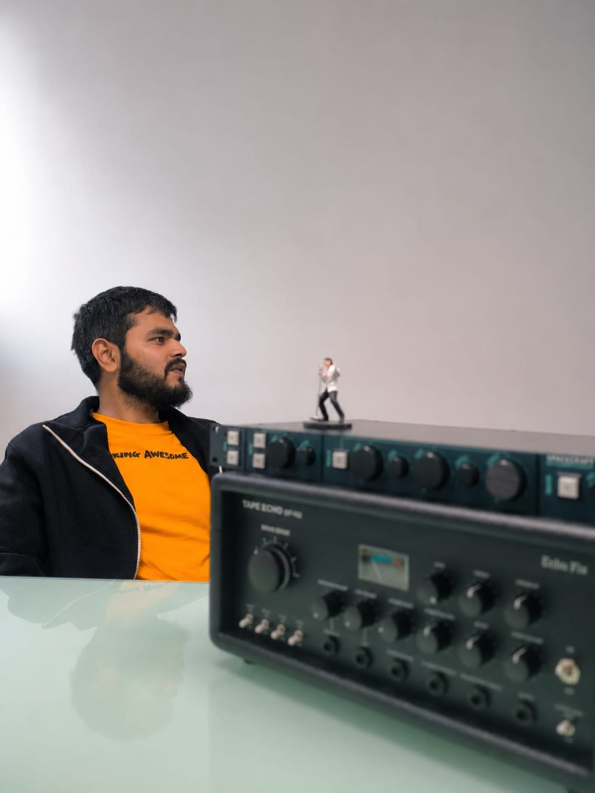

thefreq.in › About

Who is behind this?Someone who has actually mixed music, built studios, and lived the problem.
Mixing & Mastering Engineer · Satara, India
Kushal Jaju is a mixing and mastering engineer based in Satara, India (a small-town, big-dream kind of guy) and the person behind FREQ.
His journey through music started with piano, orchestral writing, and jazz. He went on to clear his auditions at the Abbey Road Institute and eventually built his own studio, including custom hardware, compressors, EQs, and even a proprietary DAW.
Years of working with music, recording equipment, and mixing systems led him to become interested in something deeper than individual plugins or processing chains.
Why does getting a great mix still have to take so much time?
It started with a simple question.
What if mixing could take less time without taking the human out of it?
Then the question became bigger.
What if mixing could take less time, while giving the person behind the mix more control and creating a better sonic result?
FREQ was never built to replace the engineer. It was built to remove the friction that gets in the way of the work: to help you shape balance, space, and character with greater control, clarity, and speed.
Because the answer couldn't be another collection of tools. It had to change the way the mix itself worked.
And that is where the real work began.
Years of algorithms, built around a different way of thinking about a mix.
At the heart of FREQ is its audio engine, built through years of work on algorithms and processing systems designed around 1 fundamental idea:
Depth-first mixing.
Instead of thinking about a mix only in terms of level, pan, and individual processing, FREQ introduces a front-to-back way of thinking about where sounds belong. That idea became the foundation for the algorithms behind the system.
The challenge was turning that idea into something that could actually respond musically, consistently, and intuitively to real music. That meant:
Building.
Testing.
Listening.
Breaking things.
Rebuilding them.
And doing it all again.
5 years of building, breaking, refining, and listening.
There was no existing blueprint for exactly what was being built. So it came together piece by piece.
Some ideas worked. Some had to be rebuilt. Some worked technically but didn't sound right. And some simply weren't good enough.
The product kept evolving through real music, real listening, and real feedback. Over time, the algorithms became more refined. The workflow became clearer. The relationship between depth, processing, balance, and sonic character became more intentional.
What began as a question slowly became a system. And that system became FREQ.
Then people started hearing it.
The early versions of FREQ were put in front of people who understood music deeply. 1 of the first people to experience it was an orchestrator with a PhD in music. Instead of taking his usual fee, he wanted to keep a copy.
Another mixer sent over an unreleased track to test it. After hearing the result, his 1st question wasn't how it worked. It was:
"When are you launching?"
The product wasn't finished. But people were beginning to hear something in it. That feedback helped shape what came next.
So, what exactly is FREQ?
A different, one-of-a-kind way to approach mixing.
FREQ is a browser-based mixing and mastering architecture built around a different way of thinking about space, balance, and sound. It introduces another dimension to the way a mix can be shaped, while keeping the person behind the music firmly in control.
At the heart of FREQ is Depth, giving sounds a front-to-back place in the mix and allowing that position to influence how processing behaves around them.
Then there is Console, which shapes the tonal character of each Depth, and Era, which lets the sonic character of the mix move across decades of mixing aesthetics.
FREQ also offers artist-based sonic profiles that give a mix a reference point while keeping the result open to adjustment. And when you want to move quickly, Optimize Balance can take an uploaded multitrack through FREQ's engine to create a strong starting mix, with everything still open for manual refinement afterward.
No AI deciding what your music should sound like.
Just algorithms built to respond to your music and your decisions.
Music isn't only left and right.
FREQ introduces a front-to-back way of thinking about the mix, letting sounds occupy different depths and creating a more intentional sense of space.
FREQ does the heavy lifting. You make the call.
The system gives you a strong starting point while keeping the important creative decisions open to you, at every stage.
The goal is simple: get to the finished mix sooner.
FREQ is built to reduce the hours spent chasing balance, space, and clarity, so more of your time can go back into making music.
You're still in control.
FREQ isn't trying to decide what your music should sound like. It's not an AI mixer. It's not trying to replace your ears. It's designed to respond to your decisions and help you get to the result faster.
Your ears lead. FREQ follows.
5 years later, we're still building.
FREQ came from 5 years of asking whether there was a better way to approach something musicians spend countless hours doing.
We've built it.
Broken it.
Refined it.
Listened.
Then built some more.
There is still more to build, more to test, and more to learn. But the idea is no longer just an idea. It's something people can hear.
And now, we're ready for the FREQ beta.
If you're a musician, producer, mixer, or simply curious about a different way of approaching a mix, we'd love for you to try it.
Reach out. Come hear what we've been building.
I genuinely believe FREQ can elevate the sonic quality of your mix.
A note from Kushal
I didn't start FREQ because I wanted to build another piece of music software. I started it because I'd spent enough time mixing to know how much of the process was about listening, deciding, and second-guessing.
I kept wondering whether technology could take away some of the friction without taking away the person. FREQ is my answer to that question.
I'm still learning. We're still building. But after 5 years of working on it, I'm finally ready for more ears to hear it.
I promise to elevate your sonic quality. And I'm an awful liar. So come hear it for yourself.
Hear it.
FREQ is difficult to explain completely on a page. The quickest way to understand it is to put a multitrack into it and hear what happens.
Your ears. Your mix. Just faster.